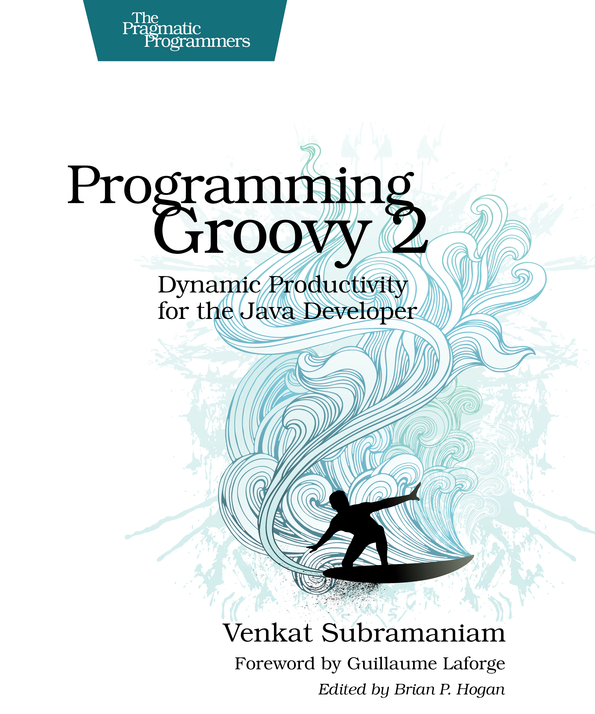

Porównanie Grooviego i Javy
Prezentacja SDI
Artur Sawicki
Plan
- Czym jest Groovy?
- Dlaczego Groovy?
- Magia Grooviego
Czym jest groovy?
- Obiektowy język programowania
- Dynamiczny
- Działa na JVM
- Kompiluje się do bytecodu Javy
Historia
- 2003 - początek prac
- 2007 styczeń - Groovy 1.0
- 2007 grudzień - Groovy 1.1 (1.5)
- 2012 - Groovy 2.0
- aktualnie - Groovy 2.3
"I can honestly say if someone had shown me the Programming in Scala book by by Martin Odersky, Lex Spoon & Bill Venners back in 2003 I'd probably have never created Groovy."
~James Strachan
Dlaczego Groovy?
- Płaska krzywa uczenia się
- Semantyka Javy
- Dynamika
- Rozszerza JDK
Auto import
- java.lang
- java.util
- java.io
- java.net
- java.math.BigDecimal
- java.math.BigInteger
- groovy.lang
- groovy.util
Średniki
Średniki w Groovym są opcjonalne, nadal trzeba ich używać kiedy chcemy zawrzeć więcej niż jedno wyrażenie w linii.
Nawiasy
Nawiasy otaczające argumenty przy wywoływaniu metod są opcjonalne. Wyjątkiem jest sytuacja kiedy metoda nie przyjmuje argumentów.
return
Ostatnia linia metody jest domyślnie zwracana z metody.
Java
String getFullName(){
return "Wspaniała prezentacja.";
}
Groovy
String getFullName(){
"Wspaniała prezentacja."
}
println
println zostało dodane do java.lang.Object
Java
System.out.println("Wspaniała prezentacja.");Groovy
println "Wspaniała prezentacja."Pętle
Java
for(int i = 0; i < 4; i++) {
System.out.print(i + " ");
}
Groovy
for(i in 0..3) { print i + ' ' }Pętle c.d
upto
0.upto(3) { print "$it "}times
4.times { print "$it "}step
0.step(10, 2) { print "$it "}duck typing
GroovyBeans
Nazwane argumenty
Operatory
Domknięcia
GString
Kolekcje
Metody dynamiczne
Bibliografia
"Programming Groovy 2" Venkat Subramaniam
"Groovy Recipes" Scott Davis